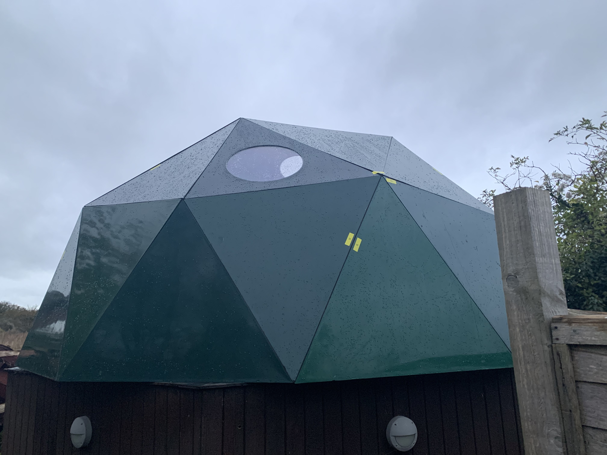

The old school observatory hadn't been touched in years and the head of physics wanted to renovate it. I was keen to help! The observatory had a rotating shell that meant the telescope could track with the rotation of the earth. The previous wooden structure was rotting, and the wheels had seized. We decided on a geodesic dome design to replace, manufactured from fibreglass panels. I modelled the dome in SolidWorks and eventually sent for manufacture. The panels were secured together with a rubber gasket to keep the structure water-tight. The structure was fully assembled, although I was never able to finalise the renovation as COVID ended my final year early.
